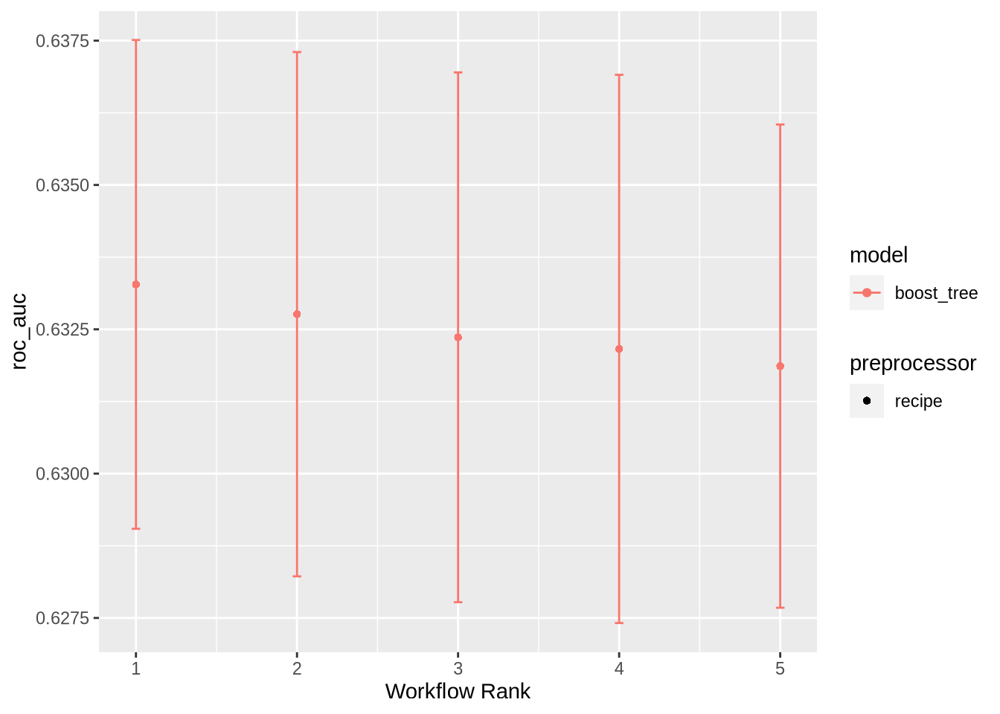
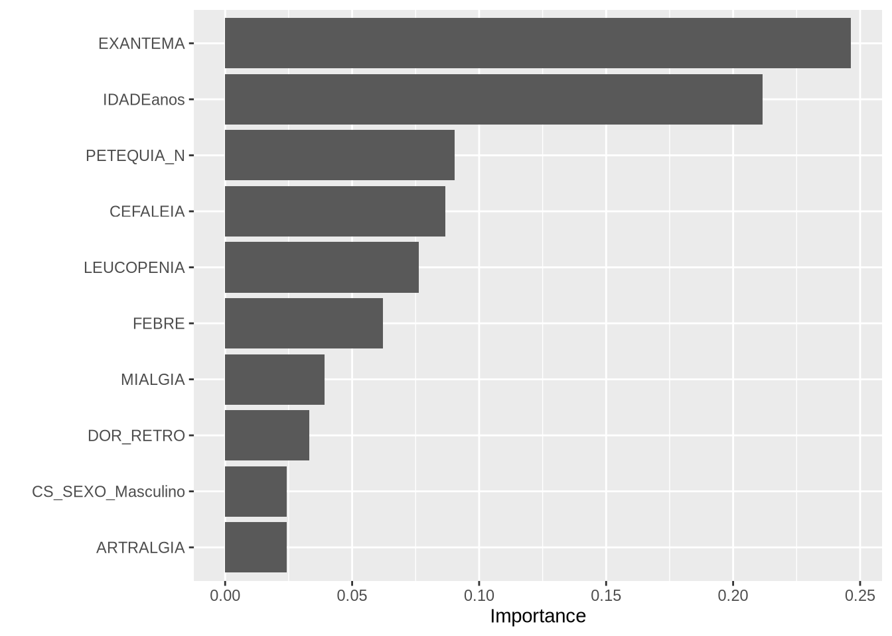

library(tidyverse)
library(arrow)
library(qs)
library(tidymodels)
library(themis)
library(finetune)
library(bonsai)
library(tictoc)
library(vip)
library(sessioninfo)
library(doParallel)
source("../../functions.R")
registerDoParallel()Model simplified reference dataset
On this notebook, models are trained and tested based on the simplified version of the reference dataset.
Packages
Data load
dc_ref_simp <- qread(file = "dc_ref_simp.qs")Dataset split
dc_ref_simp_split <- initial_split(
data = dc_ref_simp,
prop = 3/4,
strata = CLASSI_FIN
)
dc_ref_simp_training <- training(dc_ref_simp_split)
dc_ref_simp_testing <- testing(dc_ref_simp_split)Folding
dc_ref_simp_split_folds <- dc_ref_simp_training |>
vfold_cv(v = 10, strata = CLASSI_FIN)Recipes
Variable lists
to_dummy <- c('CS_SEXO', 'CS_GESTANT')symp_cond_vars <- c("FEBRE", "MIALGIA", "CEFALEIA",
"EXANTEMA", "VOMITO", "NAUSEA",
"DOR_COSTAS", "CONJUNTVIT",
"ARTRITE", "ARTRALGIA", "PETEQUIA_N",
"LEUCOPENIA", "LACO", "DOR_RETRO",
"DIABETES", "HEMATOLOG", "HEPATOPAT",
"RENAL", "HIPERTENSA", "ACIDO_PEPT",
"AUTO_IMUNE")Basic recipe
Only case symptoms
Symptoms with missing data
Without date and municipality data
rec_ref_simp_1 <- recipe(CLASSI_FIN ~ ., data = dc_ref_simp_training) |>
step_unknown(all_of(to_dummy)) |>
step_other(CS_GESTANT) |>
step_dummy(all_of(to_dummy)) |>
step_rm(CRITERIO, case_source, ID_MN_RESI, uf_res, DT_SIN_PRI)Basic recipe with missing data replacement
Only case symptoms
Symptoms without missing data
Without date and municipality data
rec_ref_simp_2 <- recipe(CLASSI_FIN ~ ., data = dc_ref_simp_training) |>
step_unknown(all_of(to_dummy)) |>
step_other(CS_GESTANT) |>
step_dummy(all_of(to_dummy)) |>
step_mutate_at(all_of(symp_cond_vars), fn = ~replace_na(., 0)) |>
step_rm(CRITERIO, case_source, ID_MN_RESI, uf_res, DT_SIN_PRI)Replace missing recipe
- Simple recipe and replace symptons NAs with
Novalues
rec_ref_simp_3 <- recipe(CLASSI_FIN ~ ., data = dc_ref_simp_training) |>
step_unknown(all_of(to_dummy)) |>
step_dummy(all_of(to_dummy)) |>
step_mutate_at(all_of(symp_cond_vars), fn = ~replace_na(., 0)) |>
step_rm(CRITERIO, case_source, ID_MN_RESI, uf_res, DT_SIN_PRI)Date recipe
Case symptoms and date (month)
Without UF
rec_ref_simp_4 <- recipe(CLASSI_FIN ~ ., data = dc_ref_simp_training) |>
step_unknown(all_of(to_dummy)) |>
step_dummy(all_of(to_dummy)) |>
step_mutate_at(all_of(symp_cond_vars), fn = ~replace_na(., 0)) |>
step_rm(CRITERIO, case_source, ID_MN_RESI, uf_res) |>
step_date(DT_SIN_PRI, features = c("month"), label = FALSE, keep_original_cols = FALSE)Date and UF recipe
- Case symptoms, date (month) and UF
rec_ref_simp_5 <- recipe(CLASSI_FIN ~ ., data = dc_ref_simp_training) |>
step_unknown(all_of(to_dummy)) |>
step_dummy(all_of(to_dummy)) |>
step_mutate_at(all_of(symp_cond_vars), fn = ~replace_na(., 0)) |>
step_rm(CRITERIO, case_source, ID_MN_RESI) |>
step_date(DT_SIN_PRI, features = c("month"), label = FALSE, keep_original_cols = FALSE) |>
step_dummy(uf_res)Learners
xgb_spec <-
boost_tree(
trees = tune(),
# tree_depth = tune(),
min_n = tune(),
# loss_reduction = tune(),
learn_rate = tune()
) |>
set_engine("xgboost", event_level = "second") |>
set_mode("classification")# lgbm_spec <-
# boost_tree(
# trees = tune(),
# tree_depth = tune(),
# min_n = tune(),
# loss_reduction = tune(),
# learn_rate = tune()
# ) |>
# set_engine("lightgbm") |>
# set_mode("classification")Workflow
ref_simp_wf <- workflow_set(
preproc = list(
rec_ref_simp_1 = rec_ref_simp_1,
rec_ref_simp_2 = rec_ref_simp_2
#rec_ref_simp_3 = rec_ref_simp_3,
#rec_ref_simp_4 = rec_ref_simp_4,
#rec_ref_simp_5 = rec_ref_simp_5
),
models = list(xgb = xgb_spec),
cross = TRUE
)Tuning
race_ctrl <- control_race(parallel_over = "everything")
ref_simp_tuning_results <-
ref_simp_wf |>
workflow_map(
"tune_race_anova",
seed = 345,
resamples = dc_ref_simp_split_folds,
grid = 25,
control = race_ctrl,
verbose = TRUE
)i 1 of 2 tuning: rec_ref_simp_1_xgb✔ 1 of 2 tuning: rec_ref_simp_1_xgb (9m 3.3s)i 2 of 2 tuning: rec_ref_simp_2_xgb✔ 2 of 2 tuning: rec_ref_simp_2_xgb (5m 38.3s)ref_simp_tuning_ranking_results <- rank_results(ref_simp_tuning_results, rank_metric = "roc_auc")
ref_simp_tuning_ranking_results# A tibble: 10 × 9
wflow_id .config .metric mean std_err n preprocessor model rank
<chr> <chr> <chr> <dbl> <dbl> <int> <chr> <chr> <int>
1 rec_ref_simp_1_… Prepro… accura… 0.599 0.00328 10 recipe boos… 1
2 rec_ref_simp_1_… Prepro… roc_auc 0.633 0.00257 10 recipe boos… 1
3 rec_ref_simp_2_… Prepro… accura… 0.597 0.00251 10 recipe boos… 2
4 rec_ref_simp_2_… Prepro… roc_auc 0.633 0.00276 10 recipe boos… 2
5 rec_ref_simp_1_… Prepro… accura… 0.597 0.00259 10 recipe boos… 3
6 rec_ref_simp_1_… Prepro… roc_auc 0.632 0.00279 10 recipe boos… 3
7 rec_ref_simp_1_… Prepro… accura… 0.598 0.00287 10 recipe boos… 4
8 rec_ref_simp_1_… Prepro… roc_auc 0.632 0.00289 10 recipe boos… 4
9 rec_ref_simp_2_… Prepro… accura… 0.599 0.00215 10 recipe boos… 5
10 rec_ref_simp_2_… Prepro… roc_auc 0.632 0.00254 10 recipe boos… 5autoplot(ref_simp_tuning_results, metric = "roc_auc")
Model last fit
ref_simp_selection <- ref_simp_tuning_ranking_results |>
arrange(-mean) |>
pull(wflow_id) |>
first()
ref_simp_selection[1] "rec_ref_simp_1_xgb"ref_simp_best_results <- ref_simp_tuning_results |>
extract_workflow_set_result(ref_simp_selection) |>
select_best("roc_auc")
ref_simp_best_results# A tibble: 1 × 4
trees min_n learn_rate .config
<int> <int> <dbl> <chr>
1 151 36 0.0328 Preprocessor1_Model23ref_simp_last_fit <- ref_simp_tuning_results |>
extract_workflow(ref_simp_selection) |>
finalize_workflow(ref_simp_best_results) |>
last_fit(dc_ref_simp_split)Model evaluation
collect_metrics(ref_simp_last_fit)# A tibble: 2 × 4
.metric .estimator .estimate .config
<chr> <chr> <dbl> <chr>
1 accuracy binary 0.604 Preprocessor1_Model1
2 roc_auc binary 0.633 Preprocessor1_Model1collect_predictions(ref_simp_last_fit) %>%
conf_mat(CLASSI_FIN, .pred_class) Truth
Prediction Negative Positive
Negative 1692 1130
Positive 725 1140ref_simp_last_fit %>%
extract_fit_engine() %>%
vip()
Session info
session_info()─ Session info ───────────────────────────────────────────────────────────────
setting value
version R version 4.3.2 (2023-10-31)
os CentOS Linux 7 (Core)
system x86_64, linux-gnu
ui X11
language (EN)
collate pt_BR.UTF-8
ctype pt_BR.UTF-8
tz America/Sao_Paulo
date 2024-02-13
pandoc 3.1.1 @ /home/raphaelfs/miniconda3/envs/quarto/bin/ (via rmarkdown)
─ Packages ───────────────────────────────────────────────────────────────────
package * version date (UTC) lib source
arrow * 14.0.1 2023-11-14 [2] local
assertthat 0.2.1 2019-03-21 [1] CRAN (R 4.2.2)
backports 1.4.1 2021-12-13 [1] CRAN (R 4.2.2)
bit 4.0.5 2022-11-15 [1] CRAN (R 4.2.2)
bit64 4.0.5 2020-08-30 [1] CRAN (R 4.2.2)
bonsai * 0.2.1 2022-11-29 [2] CRAN (R 4.3.0)
boot 1.3-28.1 2022-11-22 [1] CRAN (R 4.2.2)
broom * 1.0.4 2023-03-11 [1] CRAN (R 4.2.0)
class 7.3-22 2023-05-03 [1] CRAN (R 4.2.0)
cli 3.6.1 2023-03-23 [1] CRAN (R 4.2.0)
clock 0.7.0 2023-05-15 [1] CRAN (R 4.2.0)
codetools 0.2-19 2023-02-01 [1] CRAN (R 4.2.0)
colorspace 2.1-0 2023-01-23 [1] CRAN (R 4.2.2)
data.table 1.14.8 2023-02-17 [1] CRAN (R 4.2.2)
dials * 1.2.0 2023-04-03 [1] CRAN (R 4.2.0)
DiceDesign 1.9 2021-02-13 [1] CRAN (R 4.2.2)
digest 0.6.31 2022-12-11 [1] CRAN (R 4.2.2)
doParallel * 1.0.17 2022-02-07 [1] CRAN (R 4.2.2)
dplyr * 1.1.2 2023-04-20 [1] CRAN (R 4.2.0)
ellipsis 0.3.2 2021-04-29 [1] CRAN (R 4.2.2)
evaluate 0.21 2023-05-05 [1] CRAN (R 4.2.0)
fansi 1.0.4 2023-01-22 [1] CRAN (R 4.2.2)
farver 2.1.1 2022-07-06 [1] CRAN (R 4.2.2)
fastmap 1.1.1 2023-02-24 [1] CRAN (R 4.2.2)
finetune * 1.1.0 2023-04-19 [2] CRAN (R 4.3.0)
forcats * 1.0.0 2023-01-29 [1] CRAN (R 4.2.2)
foreach * 1.5.2 2022-02-02 [1] CRAN (R 4.2.2)
furrr 0.3.1 2022-08-15 [1] CRAN (R 4.2.2)
future 1.32.0 2023-03-07 [1] CRAN (R 4.2.0)
future.apply 1.11.0 2023-05-21 [1] CRAN (R 4.2.0)
generics 0.1.3 2022-07-05 [1] CRAN (R 4.2.2)
ggplot2 * 3.4.2 2023-04-03 [1] CRAN (R 4.2.0)
globals 0.16.2 2022-11-21 [1] CRAN (R 4.2.2)
glue 1.6.2 2022-02-24 [1] CRAN (R 4.2.2)
gower 1.0.1 2022-12-22 [1] CRAN (R 4.2.2)
GPfit 1.0-8 2019-02-08 [1] CRAN (R 4.2.2)
gtable 0.3.3 2023-03-21 [1] CRAN (R 4.2.0)
hardhat 1.3.0 2023-03-30 [1] CRAN (R 4.2.0)
hms 1.1.3 2023-03-21 [1] CRAN (R 4.2.0)
htmltools 0.5.5 2023-03-23 [1] CRAN (R 4.2.0)
htmlwidgets 1.6.2 2023-03-17 [1] CRAN (R 4.2.0)
infer * 1.0.4 2022-12-02 [1] CRAN (R 4.2.2)
ipred 0.9-13 2022-06-02 [1] CRAN (R 4.2.2)
iterators * 1.0.14 2022-02-05 [1] CRAN (R 4.2.2)
jsonlite 1.8.5 2023-06-05 [1] CRAN (R 4.2.0)
knitr 1.43 2023-05-25 [1] CRAN (R 4.2.0)
labeling 0.4.2 2020-10-20 [1] CRAN (R 4.2.2)
lattice 0.21-8 2023-04-05 [1] CRAN (R 4.2.0)
lava 1.7.2.1 2023-02-27 [1] CRAN (R 4.2.2)
lhs 1.1.6 2022-12-17 [1] CRAN (R 4.2.2)
lifecycle 1.0.3 2022-10-07 [1] CRAN (R 4.2.2)
listenv 0.9.0 2022-12-16 [1] CRAN (R 4.2.2)
lme4 1.1-35.1 2023-11-05 [2] CRAN (R 4.3.2)
lubridate * 1.9.2 2023-02-10 [1] CRAN (R 4.2.2)
magrittr 2.0.3 2022-03-30 [1] CRAN (R 4.2.2)
MASS 7.3-60 2023-05-04 [1] CRAN (R 4.2.0)
Matrix 1.5-4.1 2023-05-18 [1] CRAN (R 4.2.0)
minqa 1.2.6 2023-09-11 [2] CRAN (R 4.3.1)
modeldata * 1.1.0 2023-01-25 [1] CRAN (R 4.2.2)
munsell 0.5.0 2018-06-12 [1] CRAN (R 4.2.2)
nlme 3.1-162 2023-01-31 [1] CRAN (R 4.2.2)
nloptr 2.0.3 2022-05-26 [2] CRAN (R 4.3.0)
nnet 7.3-19 2023-05-03 [1] CRAN (R 4.2.0)
parallelly 1.36.0 2023-05-26 [1] CRAN (R 4.2.0)
parsnip * 1.1.0 2023-04-12 [1] CRAN (R 4.2.0)
pillar 1.9.0 2023-03-22 [1] CRAN (R 4.2.0)
pkgconfig 2.0.3 2019-09-22 [1] CRAN (R 4.2.2)
prettyunits 1.1.1 2020-01-24 [1] CRAN (R 4.2.2)
prodlim 2019.11.13 2019-11-17 [1] CRAN (R 4.2.2)
purrr * 1.0.1 2023-01-10 [1] CRAN (R 4.2.2)
qs * 0.25.5 2023-02-22 [1] CRAN (R 4.2.3)
R6 2.5.1 2021-08-19 [1] CRAN (R 4.2.2)
RApiSerialize 0.1.2 2022-08-25 [1] CRAN (R 4.2.3)
Rcpp 1.0.10 2023-01-22 [1] CRAN (R 4.2.2)
RcppParallel 5.1.7 2023-02-27 [1] CRAN (R 4.2.2)
readr * 2.1.4 2023-02-10 [1] CRAN (R 4.2.2)
recipes * 1.0.6 2023-04-25 [1] CRAN (R 4.2.0)
rlang * 1.1.1 2023-04-28 [1] CRAN (R 4.2.0)
rmarkdown 2.22 2023-06-01 [1] CRAN (R 4.2.0)
ROSE 0.0-4 2021-06-14 [2] CRAN (R 4.3.0)
rpart 4.1.19 2022-10-21 [1] CRAN (R 4.2.0)
rsample * 1.2.0 2023-08-23 [1] CRAN (R 4.3.2)
rstudioapi 0.14 2022-08-22 [1] CRAN (R 4.2.2)
scales * 1.2.1 2022-08-20 [1] CRAN (R 4.2.2)
sessioninfo * 1.2.2 2021-12-06 [1] CRAN (R 4.2.1)
stringfish 0.15.8 2023-05-30 [1] CRAN (R 4.2.3)
stringi 1.7.12 2023-01-11 [1] CRAN (R 4.2.2)
stringr * 1.5.0 2022-12-02 [1] CRAN (R 4.2.2)
survival 3.5-5 2023-03-12 [1] CRAN (R 4.2.0)
themis * 1.0.2 2023-08-14 [2] CRAN (R 4.3.1)
tibble * 3.2.1 2023-03-20 [1] CRAN (R 4.2.0)
tictoc * 1.2 2023-04-23 [1] CRAN (R 4.2.0)
tidymodels * 1.0.0 2022-07-13 [1] CRAN (R 4.2.2)
tidyr * 1.3.0 2023-01-24 [1] CRAN (R 4.2.2)
tidyselect 1.2.0 2022-10-10 [1] CRAN (R 4.2.2)
tidyverse * 2.0.0 2023-02-22 [2] CRAN (R 4.3.0)
timechange 0.2.0 2023-01-11 [1] CRAN (R 4.2.1)
timeDate 4022.108 2023-01-07 [1] CRAN (R 4.2.2)
tune * 1.1.2 2023-08-23 [1] CRAN (R 4.3.2)
tzdb 0.4.0 2023-05-12 [1] CRAN (R 4.2.0)
utf8 1.2.3 2023-01-31 [1] CRAN (R 4.2.2)
vctrs 0.6.3 2023-06-14 [1] CRAN (R 4.2.3)
vip * 0.4.1 2023-08-21 [2] CRAN (R 4.3.1)
withr 2.5.0 2022-03-03 [1] CRAN (R 4.2.2)
workflows * 1.1.3 2023-02-22 [1] CRAN (R 4.2.2)
workflowsets * 1.0.0 2022-07-12 [1] CRAN (R 4.2.2)
xfun 0.39 2023-04-20 [1] CRAN (R 4.2.0)
xgboost * 1.7.5.1 2023-03-30 [1] CRAN (R 4.2.0)
yaml 2.3.7 2023-01-23 [1] CRAN (R 4.2.2)
yardstick * 1.2.0 2023-04-21 [1] CRAN (R 4.2.0)
[1] /home/raphaelfs/rlibs
[2] /home/raphaelfs/miniconda3/envs/quarto/lib/R/library
──────────────────────────────────────────────────────────────────────────────